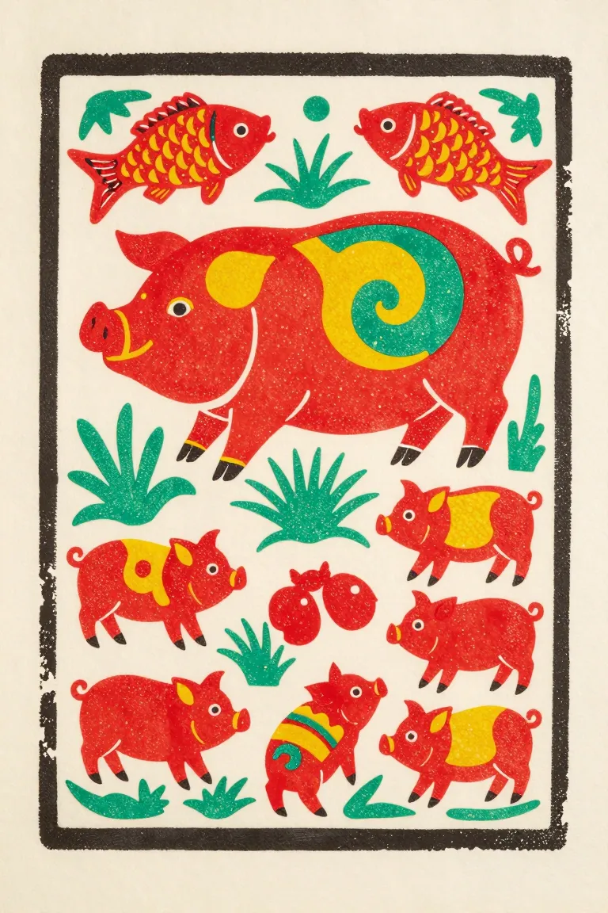

печать · c.1600 (date not certain)–1950s · также: Tranh Đông Hồ, Tranh khắc gỗ dân gian Đông Hồ, Живопись Донгхо
Жители деревни печатают чёрную контурную доску, затем одну за другой добавляют плоские цветные доски на бумаге зо, покрытой порошком раковин гребешка. Краски делают из растений и минералов, поэтому они яркие и плоские.

Главная идея
Деревня способна напечатать целое народное искусство из растительных и минеральных красок, по одной плоской доске, на бумаге, которая блестит от растёртой раковины.
Принципы дизайна
Печатайте чёрную контурную доску первой. Держите линию грубой, шириной 1–3 мм.
Добавляйте 4–5 плоских цветных досок одну за другой, от светлой к тёмной, без градаций.
Берите кроющие краски: жёлтую софоры, зелёную листа, красную и белую раковины.
Выбирайте сюжеты к Новому году (Тет): карп, свинья с поросятами, петух и свадьба мышей.
Вырезайте подпись в доске или пишите её от руки, как пословицу или пожелание.
Позвольте цвету сместиться от контура на 1–2 мм. Оставляйте волокно дерева в больших полях.
Печатайте на бумаге зо с покрытием из порошка раковин гребешка, чтобы лист искрился.
Антипаттерны
Градиентная тушёвка или мягкая лепка формы
Тонкая штриховка или тонкая нежная линия
Растровые точки или фотография
Глянцевая гладкая отделка
Набор цветов, которых не даёт ни одно растение и ни один минерал